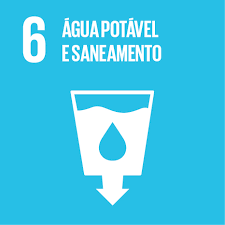
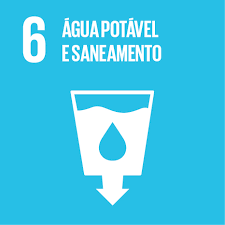
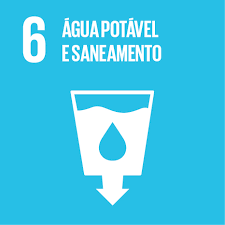
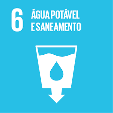

 

Energia Limpa, remetem as maneiras de fontes de energia que não emitem poluentes na atmosfera e que tenha somente um impacto no seu local de instalação.
O Objetivo 7 da ONU (Organização das Nações Unidas) seria basicamente fornecer a todos o acesso a energia e que ela seja gerada por fontes de energia limpa, pois ainda em cada 7 pessoas no planeta 1 delas não possuem energia e somente 20% da energia que é consumida do planeta vem de fontes renováveis.
A Energia Eólica é a transformação da força do vento em energia útil. Uma tecnologia bem antiga que usava o conceito da força do vento eram os moinhos. É uma fonte de energia infinita, porém é necessário se localizar em ambientes que ventem muito para que seja eficiente.

A Energia Solar vem dos raios solares e do calor do sol que são captados por placas que com esse calor e luz é gerado a energia útil. Para sua instalação é necessário que a placa tenha um contato com o sol. Atualmente, varias casas, prédios, entre outros, estão utilizando a energia solar como uma fonte secundária de energia para diminuir os gastos.

A Energia Maremotriz é gerada por meio do movimento das marés podendo ser geradas pela Energia Cinética das correntes das marés e da Energia Potencial pela diferença de altura entre as marés alta e baixa. O aproveitamento da energia das marés pode ser feito a partir de centrais elétricas que funcionam por ação da água dos mares. É necessária uma diferença de 7 metros entre a maré alta e a maré baixa para que o aproveitamento desta energia seja renovável. Atualmente na Europa existem pelo menos duas destas centrais:Uma no norte de França e outra na Rússia.
A Energia Geotérmica é a energia obtida a partir do calor proveniente do interior da Terra. O calor da Terra existe numa parte por baixo da superfície do planeta, mas em algumas partes está mais perto da superfície do que outras, o que torna mais fácil a sua utilização. Em certos locais, fazendo furos de apenas 100 metros é possível alcançar calor útil, assim como existem zonas onde contém nascentes de água quente completamente espontâneas. Mas na maior parte do mundo é necessário fazer furos de quilómetros de profundidade para encontrar calor significativo. (Tipicamente na crosta terrestre a temperatura aumenta 25º a 30º celsius por cada quilómetro de profundidade em direcção ao centro da Terra.)
A Hidrelétrica é um complexo de projetos de engenharia civil, elétrica, energia e mecânica, compreendendo
as áreas de hidráulica, estruturas de concreto, geotécnica, geológica, de tecnologia do concreto, de computação,
de controle, de automação, ambiental, florestal, de solos, de fundações, de materiais, de montagem
eletromecânica, etc. Um conjunto de obra e equipamentos, que tem por finalidade produzir energia elétrica
através do aproveitamento do potencial hidráulico existente em um rio.
As usinas hidroelétricas funcionam através da pressão da água que gira a turbina, transformando a energia
potencial em energia cinética. Depois de passar pela turbina o gerador transforma a energia cinética em energia
elétrica. Através de fios e cabos a energia é distribuída, e antes de chegar nas casas e comércios é
transformada em baixa tensão.
A Energia Nuclear é a energia liberada em uma reação nuclear, ou seja, em processos de transformação de núcleos atômicos. Alguns isótopos de certos elementos apresentam a capacidade de se transformar em outros isótopos ou Elementos através de reações nucleares, emitindo energia durante esse processo. Baseia-se no princípio da equivalência massa-energia (observado por Albert Einstein), segundo a qual durante reações nucleares ocorre transformação de massa em energia.
A energia gerada por Biocombustíveis é o combustível de origem biológica não fóssil, produzido a partir de processos sob a biomassa. Como a biomassa pode ser usada diretamente como combustível , algumas pessoas consideram a biomassa como sinônimo de biocombustível. Entretanto, a biomassa simplesmente denota a matéria-prima biológica da qual o combustível é fabricado ou algum produto final sólido termicamente/quimicamente alterado, como os pellets e os briquetes. Os biocombustíveis podem ser produzidos a partir da cana-de-açúcar, mamona, soja, canola, babaçu, mandioca, milho, beterraba, algas, além de resíduos domésticos e/ou industriais - caso sejam de origem biológica.
Energia Limpa, remetem as maneiras de fontes de energia que não emitem poluentes na atmosfera e que tenha somente um impacto no seu local de instalação.